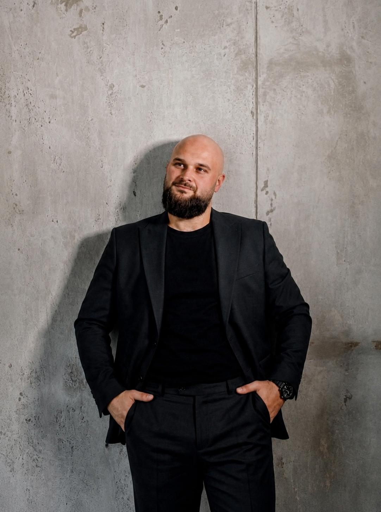

СИЛА ВОЛІ
ТУТ НЕ
ПРАЦЮЄ.
Допомагаю побачити приховані сценарії, тригери та внутрішні конфлікти, які керують вашим життям. З наочним візуальним результатом.
Написати в Telegram
МОЖЛИВО, ВИ
ВПІЗНАЄТЕ СЕБЕ
ПОСТІЙНА ТРИВОГА
Наче об'єктивно все нормально, але всередині фонова напруга не зникає. Відчуття, що от-от станеться щось погане.
СКЛАДНІ СТОСУНКИ
Ті самі конфлікти, розчарування та вибір "не тих" партнерів знову і знову. Неможливість вийти з руйнівного сценарію.
ВИГОРАННЯ ТА АПАТІЯ
Немає сил навіть на те, що раніше приносило задоволення. Життя відчувається як постійне "треба" без "хочу".
ВІДСУТНІСТЬ КОРДОНІВ
Невміння сказати "ні". Постійне підлаштування під інших на шкоду власним інтересам через страх відкидання.
ЩО ЗМІНЮЄТЬСЯ
Ви чітко бачите, що і чому вас тригерить, замість того, щоб тонути в емоціях.
Ви перестаєте наступати на ті самі граблі у стосунках чи роботі.
Повертаєте здатність спиратися на себе, а не шукати підтвердження зовні.
Маєте на руках конкретні кроки, що робити, коли знову "накриває".
КАРТА
ПСИХІКИ
Більшість терапій — це просто усні бесіди. Я пропоную інший підхід. Після глибокої сесії ви отримуєте структурований письмовий документ. Вашу особисту інструкцію до себе.

СТРУКТУРА, А НЕ ЖАЛІСТЬ
Я прийшов у психологію не з книжок, а з власного досвіду супроводу військових і ветеранів у кризових станах.
Там я чітко зрозумів: людині у напрузі потрібна не абстрактна порада. Їй потрібна можливість побачити себе збоку чесно, без оцінок і осуду.
Я не оцінюю ваші рішення. Не кажу «треба було». Те, що ви відчуваєте — це не «проблема характеру», це реакція на досвід.
ДИПЛОМИ


* Натисніть на документ, щоб відкрити його на весь екран
АНОНІМНІ ВІДГУКИ
"Діма, привіт! Перечитую нашу карту вже третій раз. Нарешті зрозуміла, чому мене так криє, коли хлопець просто мовчить. Вчора замість істерики відкрила схему, подивилась на свої тригери і реально попустило. Це якийсь меджик, дякую величезне!"
"Йшов на сесію дуже скептично налаштований. Думав, знову будуть колупати дитинство і питати, що я відчуваю. Але розбір вийшов максимально по ділу, як для мужика. Побачив свою «сліпу зону» в роботі, тепер ясно, куди зливаються всі сили і чому я постійно вигорівший."
"Дуже боялась йти. Думала, що зі мною щось не так і мене будуть засуджувати за мої вчинки. А вийшло так тепло і без оцінок. Карта психіки — це топ. Наче інструкція до самої себе. Тепер я бачу свій базовий сценарій і розумію, як з нього виходити."
ЧАСТІ ЗАПИТАННЯ
Звичайна консультація — це усний формат. Карта психіки — це глибока сесія, після якої ви отримуєте візуальну схему своєї психіки.
Напишіть мені в Telegram коротко вашу ситуацію. Я відверто скажу, чи зможу допомогти.
Стандартна сесія триває 60 хвилин. Формат: онлайн-відеозв'язок.
Працюю виключно індивідуально і лише з повнолітніми (18+).
Це нормально. Достатньо прийти з відчуттям "мені погано". Я допоможу розплутати цей клубок.
ФОРМАТИ РОБОТИ
КОНСУЛЬТАЦІЯ
Усний розбір ситуації. Без письмового звіту. (60 хв)
- Аналіз поточного стану
- Усні рекомендації
КАРТА ПСИХІКИ
Глибока сесія + візуальна схема (mind-map)
- Усе з базової консультації
- Схема тригерів та реакцій
- Аналіз 10 пунктів карти
- План перших дій
КАРТА PRO
Максимальний розбір. Додатковий текстовий супровід.
- Коріння реакцій
- Детальний аналіз особистості
- Велика інструкція до себе
Екстрена консультація
Зв'язок можливий навіть о 2-й ночі.
ДОСИТЬ НЕСТИ ЦЕ
САМОСТІЙНО.
Готові розібратися в причинах і побачити структуру? Напишіть мені.